A motorised focus-stacking rail: parts, printing, assembly, electronics,
software and first use.
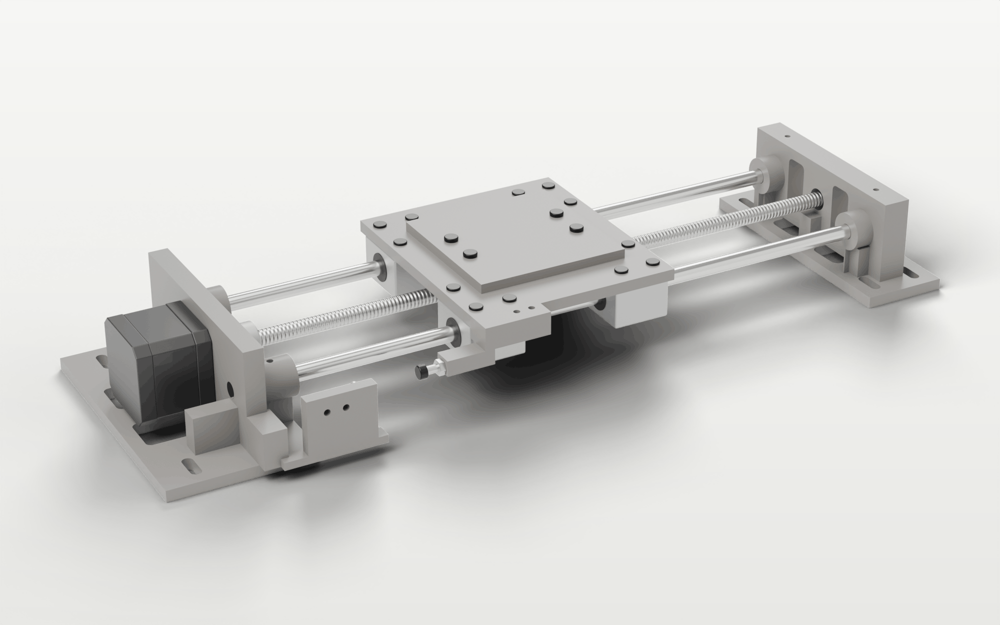
For the rail as published at github.com/Sam-de-Ham/MacroRail, November 2026.
The optional scan module has its own guide.
{{contents}}
About the rail
MacroRail moves the subject along the lens axis in steps of a few micrometres while a fixed
camera takes one photograph per step. Combining the photographs (focus stacking) gives one image
that is sharp throughout. The rail is meant for macro lenses and microscope objectives, where the
depth of field is a few tens of micrometres.
A Raspberry Pi runs a web app that is used from a phone or a laptop on the same network. The Pi
talks to an Arduino Nano over USB; the Nano drives a NEMA 17 stepper through a TMC2209 driver and
watches a home switch. The camera is connected to the Pi by USB and controlled with gphoto2.
{{rail_overview}}How the parts are connected. The browser never
talks to the hardware directly: everything goes through the Pi.
Main figures of the rail as built.
Item
Value
Travel
140 mm usable (soft limit travel_mm); about 150 mm mechanical
Resolution
2.5 µm per microstep (Tr8×8 screw, 200 steps/rev, 1/16 microstepping)
Lead-screw backlash
14 µm ± 7 µm measured; avoided by always arriving in the stack direction
Speeds (defaults)
travel 2 mm/s, during a stack 1 mm/s, acceleration 10 mm/s²
Motor current (defaults)
600 mA running, 200 mA holding, set over UART
Supplies
12 V for the motor; 5 V for the Pi (2.5 A); the Nano is powered by the Pi's USB
Footprint
about 400 × 140 mm, on a heavy base
How to use this guide
Work through the sections in order. Sections 2 to 4 cover the mechanics, 5 and 6 the
electronics, 7 and 8 the software, and 9 to 11 the first power-up, the camera and the first stack.
Section 12 lists common faults. Steps that matter for safety or for the electronics are marked as
cautions.
Before you start
Never connect or disconnect the motor while the 12 V supply is on: it can destroy the TMC2209.
Disconnect the power while assembling or adjusting, and keep fingers clear of the coupler and the
lead screw whenever the motor is powered.
A simulator lets you try the app without any hardware: on a computer with uv installed, run
uv run macrorail --sim in the repository and open http://localhost:8000.
What you need
Bought parts
Prices are approximate (euro, 2026, from general online shops) and only meant as a guide.
Much of the motion hardware can come from an old 3D printer: the prototype used the rods, bearing
blocks, lead screw and motor of an Anet A8.
Part
Qty
Specification
≈ €
Mechanics
Smooth rod
2
Ø8 mm, 380 mm long
12
Linear bearing block
4
SC8UU (8 mm, M4 mounting holes)
12
Lead screw with nut
1
Tr8×8 (8 mm lead, 2 mm pitch, 4 starts), about 345 mm; flanged T8 brass nut (Ø22 flange) with its four M3 screws
10
Flexible coupler
1
5 mm to 8 mm, helical, about Ø19 mm
3
Stepper motor
1
NEMA 17, 1.8°, 4 wires, 5 mm shaft (prototype: 42SHDC3025-24B)
12
Roller-lever microswitch
1
3 terminals (C, NO, NC), e.g. KW12 type
1
Fasteners
M3, M4 and M5 screws, nuts and washers; see 2.3
8
PLA filament
about 350 g
7
Base
1
flat, heavy board or plate, at least 420 × 160 mm
10
Electronics
Arduino Nano
1
ATmega328P; a CH340 clone is fine; with a USB data cable (Mini-B on most)
6
Stepper driver
1
TMC2209 module (StepStick format, BTT or FYSETC style) with the PDN_UART pin brought out; sense resistor 0.11 Ω
6
Motor supply
1
12 V DC, 2 A, with leads or a screw-terminal adapter
9
Capacitor
1
100 µF electrolytic, 25 V or more
0.2
Resistors
1 + 1
1 kΩ and 10 kΩ, ¼ W
0.2
Breadboard and wires
1
half-size breadboard (30 columns); male–male jumper wires in several colours; wire for the switch
6
Computer
Raspberry Pi
1
3B+ or later (tested on a 3B+); microSD card, 16 GB or more; official 5.1 V / 2.5 A supply
55
Total, without camera and optics
about 160
Also needed, not included above: a camera that gphoto2 can trigger
remotely (tested with a Sony A6400) with its USB cable, a lens or objective, a tripod or stand
that holds the camera at the rail's height, and preferably a mains adapter (dummy battery) for
the camera. A Pi under-supplied by a weak adapter drops USB devices; use a proper 2.5 A supply.
Printed parts
The six STL files are in hardware/rail/stl/. They keep their assembly
coordinates, so use drop to build plate and arrange in the slicer.
File
Qty
On the bed
Infill
01_motor_end_block
1
broad mounting foot
40–60 %
02_far_end_block
1
broad mounting foot
40–60 %
03_carriage
1
largest flat face
40–60 %
04_floating_nut_carrier
1
upside down: the 30 × 40 mm flange on the bed
40–60 %
05_sample_platform
1
largest flat face (not needed with the scan module)
30–50 %
06_endstop_trigger
1
broad pad, or turned so the horizontal M4 pilot hole prints cleanly
30–50 %
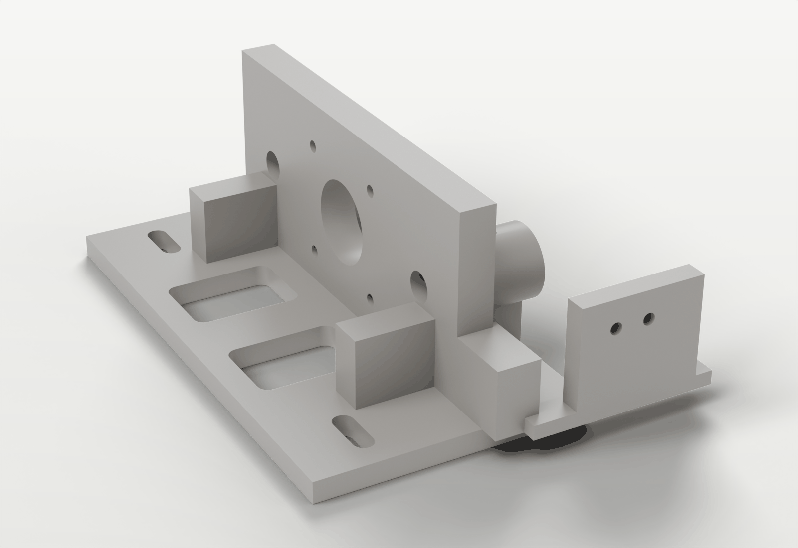
Motor-end block: rod bosses, coupler opening, switch tab.
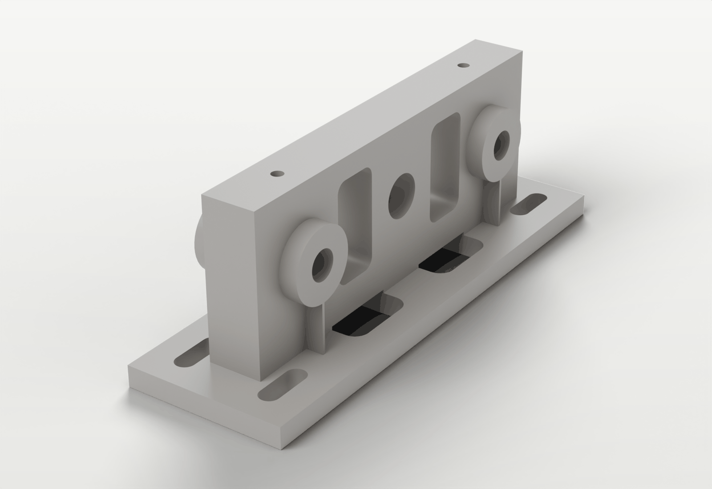
Far-end block.
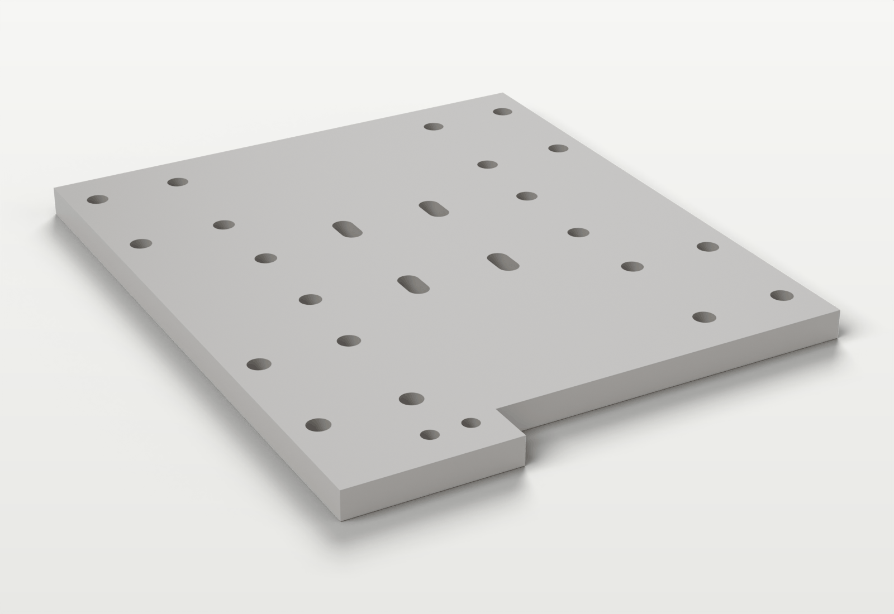
Carriage plate.
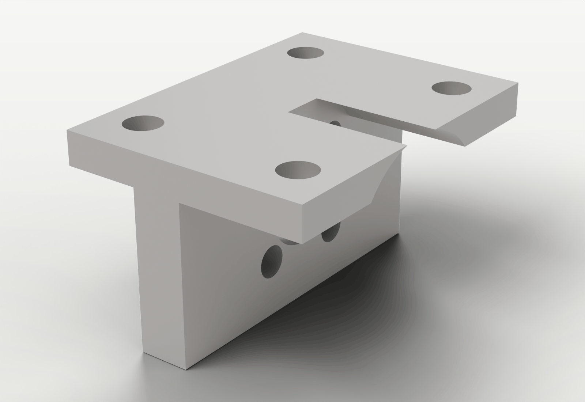
Floating nut carrier.
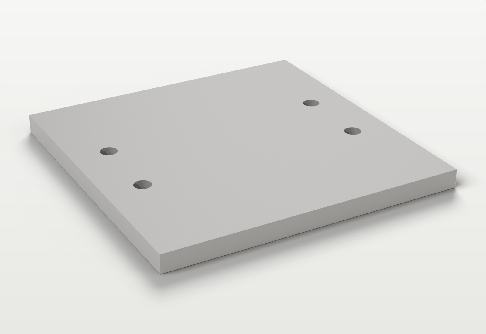
Sample platform.
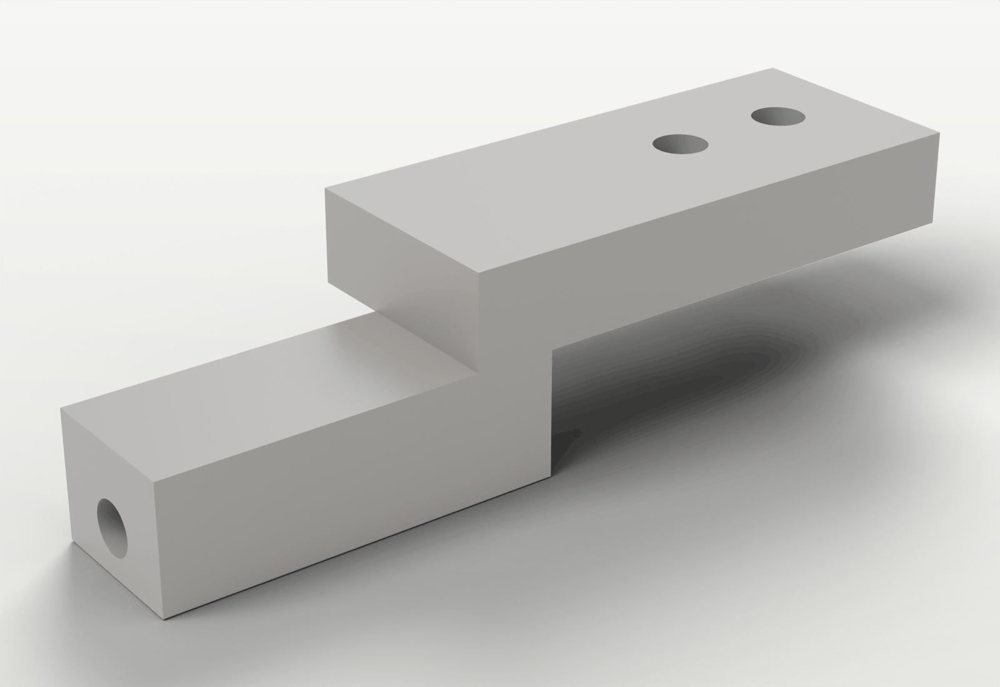
Endstop trigger.
Fasteners
Check every screw length against the printed parts before tightening.
Joint
Fasteners
Motor to motor-end block
4 × M3, 14–16 mm depending on washers; they must not reach the windings
Bearing blocks to carriage
up to 16 × M4 × 10–12
T8 nut to nut carrier
the nut's own 4 × M3 screws
Nut carrier to carriage
4 × M4 × 16, washers and nuts
Sample platform to carriage
4 × M4 × 16, washers and nuts
Trigger to carriage
2 × M3 × 16, washers and nuts
Trigger adjusting screw
1 × M4, about 20 mm, into the trigger's 3.3 mm pilot, with a nut to lock it
Rod retention
4 × M4, short, tapped or thread-formed into the 3.3 mm pilot holes
Home switch to the motor-end tab
2 small screws to suit the switch's holes (M2.5 or M3 class)
End blocks to the base
M5 bolts or wood screws with large washers, through the slots in the feet
Tools
Hex keys for M3, M4 and M5 and for the coupler's set screws; a small screwdriver; an M4 tap or a
thread-forming screw for the pilot holes; a deburring tool or craft knife; pliers; a multimeter
(continuity and resistance); a USB cable to the Pi; and a computer to prepare the Pi's SD card.
Printing
Setting
Value
Material
PLA (change material only once the fits are proven)
Nozzle, layer height
0.4 mm, 0.2 mm
Walls
at least 4
Top and bottom layers
at least 5
Infill
end blocks, carriage and nut carrier 40–60 %; platform and trigger 30–50 %
Supports
none, in the orientations of section 2.2
Both end blocks have thin (0.8 mm) sacrificial fins under the two horizontal rod bosses, so the
round bosses don't start in mid-air. Print them as part of the model and snap or trim them off
afterwards.
The openings in the walls are bridged. Don't add supports inside them unless a test print shows
that your printer can't bridge them.
Print a small part, or a slice of an end block, first and check the fits before printing both
end blocks.
Preparing the parts
Deburr. Remove the elephant's foot, strings and any support residue from every
mating face, and break the edges of the holes.
Check the holes. Try the M3, M4 and M5 clearance holes with their screws,
without forcing them.
Prepare the pilots. Tap or thread-form the four 3.3 mm M4 rod-retention holes in
the end blocks and the horizontal pilot in the trigger.
Try the rods. Push each rod through both end blocks. It should go in without
force.
Try the bearings. Run every bearing block along both rods. Put aside any block
that feels rough or has play.
Mechanical assembly
The rods guide, the screw pushes and the base supplies the stiffness. The nut carrier is only
tightened once the carriage runs freely on its own; that order is what keeps the rail from
binding.
Carriage and bearing blocks
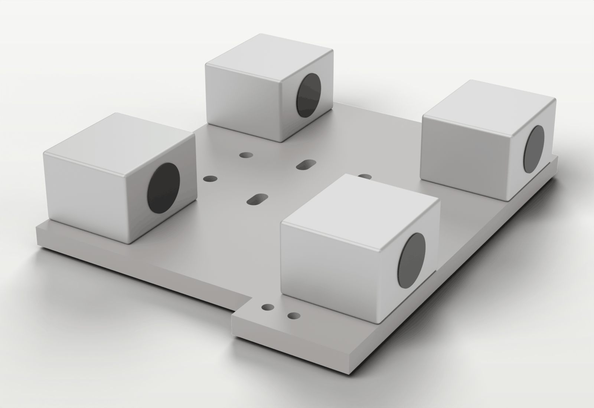
The carriage upside
down with the four SC8UU blocks.
Lay the carriage upside down: the bearing face up, the platform face on the bench.
Place two SC8UU blocks on each rod line, 80 mm apart centre to centre.
Start all M4 screws by hand before tightening any of them.
Tighten them gradually and diagonally, so the blocks stay flat on the carriage. Leave them
snug, not fully tight, until the carriage is on the rods.
The four bores must form two straight, parallel lines. A twisted block binds at once.
Rods and end blocks
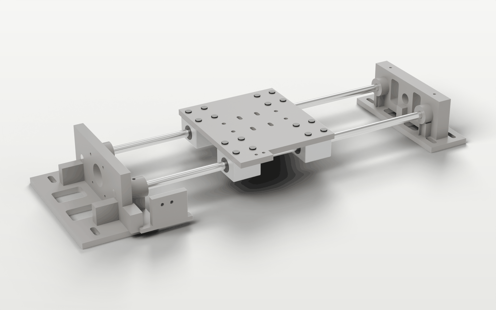
Both end blocks
with the two rods and the carriage on them.
Stand the motor-end block on a known-flat surface (the base or a temporary one).
Push both rods through the motor-end block's bosses. Don't tighten the M4 retaining screws yet.
Support the carriage and slide it onto the rods through all four bearing blocks.
Slide the far-end block onto the rod ends.
Move the carriage back and forth and adjust the far-end block until the resistance is low and
even over the whole travel. Then tighten the bearing-block screws fully.
Lock the rods: the motor-end retaining screws first, then the far end, gradually.
Check before going on
Without the lead screw, the carriage must slide smoothly over the whole travel. If it binds now,
find the cause (table below) before fitting the screw.
Symptom
Likely cause
Correction
Tight everywhere
rod spacing does not match the blocks
loosen the far block and the bearing screws, let them settle, tighten again
Tight near one end
rods not parallel
realign the far block
Rough at regular intervals
dirty or damaged rod or bearing
clean, turn the rod, or replace the block
Carriage rocks
loose block or worn bearing
tighten the block, or replace it
Motor and coupler
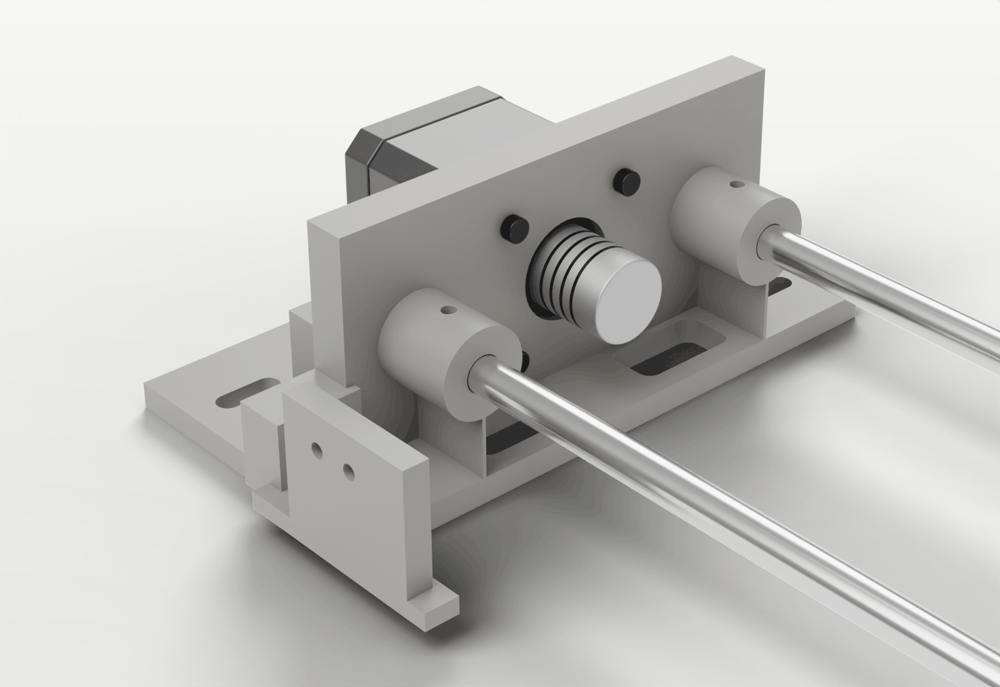
The NEMA 17 on the
motor-end block, with the coupler in the opening.
Fit the coupler to the motor shaft and tighten its motor-side set screw on the shaft's flat.
Bolt the motor to the outer face of the motor-end plate with four M3 screws, the coupler
passing through the central opening. Check that the screws don't bottom out in the motor.
Turn the motor by hand until both set screws can be reached through the opening.
Lead screw and nut carrier
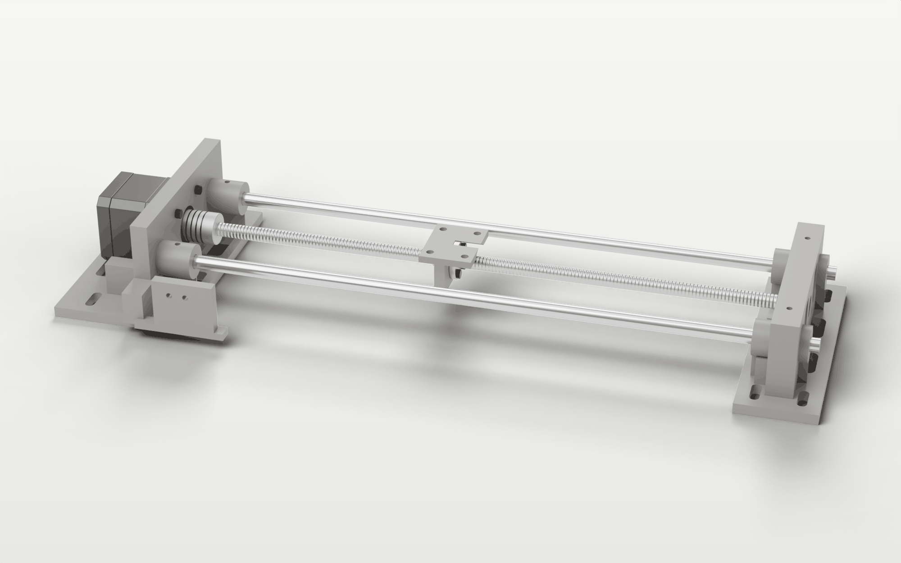
The lead
screw in the coupler and the T8 nut on the floating carrier (carriage hidden).
Screw the T8 nut's flange to the vertical face of the floating nut carrier with its four M3 screws.
Thread the nut onto the lead screw by turning the screw, never forcing the thread.
Push the screw about 6–7 mm into the coupler, without letting it touch the motor shaft, and
tighten the screw-side set screw. The far end of the screw stays free, clear of the far-end block.
Bolt the carrier under the carriage with four M4 × 16 through the adjustment slots, loosely.
Run the carriage through its whole travel by hand, turning the screw, so the carrier finds the
screw's natural line.
Tighten the carrier evenly at the position where the screw turns with the least side load,
without pulling the carriage sideways.
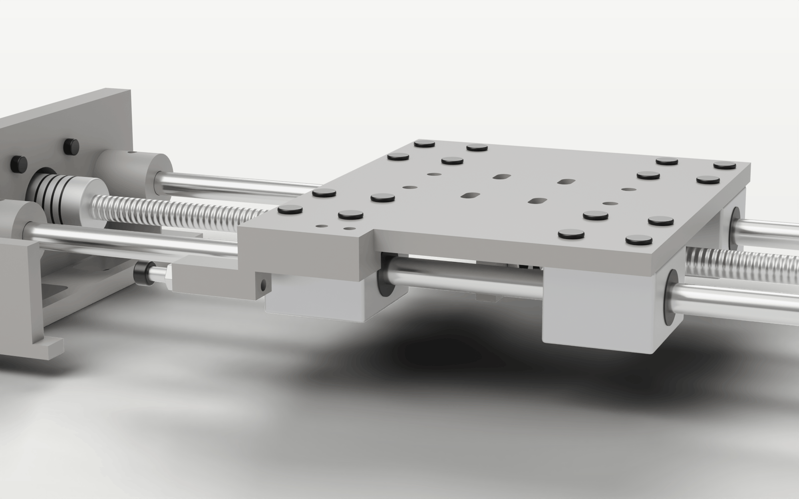
The carriage over the nut
carrier, seen from low down (platform not fitted).
The screw is not self-locking
A Tr8×8 screw moves 8 mm per turn and can be back-driven: with the motor off, the carriage
can be pushed. Turning the motor off therefore clears the rail's homed state in the app.
Check now: the screw turns by hand over the full travel, the carriage doesn't move sideways
as it turns, and the coupler runs true.
Sample platform
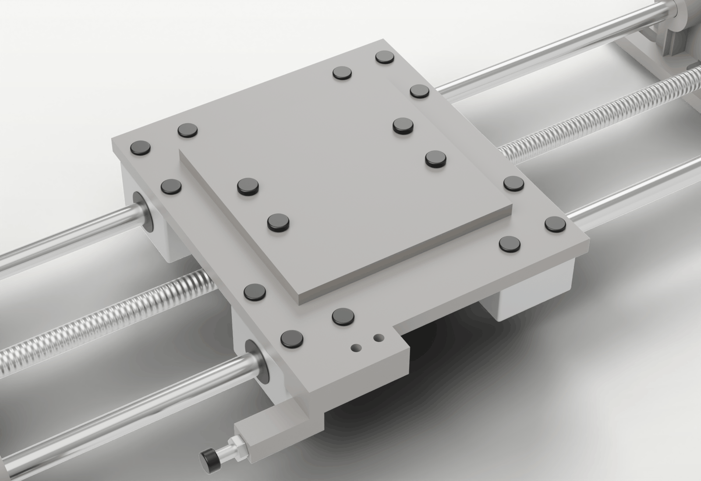
The sample platform on the
carriage.
Bolt the platform to the carriage's 60 × 20 mm hole pattern with four M4 × 16, washers and
nuts. Tighten until it is rigid, without bowing either plate.
If you are fitting the scan module, leave the platform off: the module bolts to the same four
holes.
Home switch and trigger
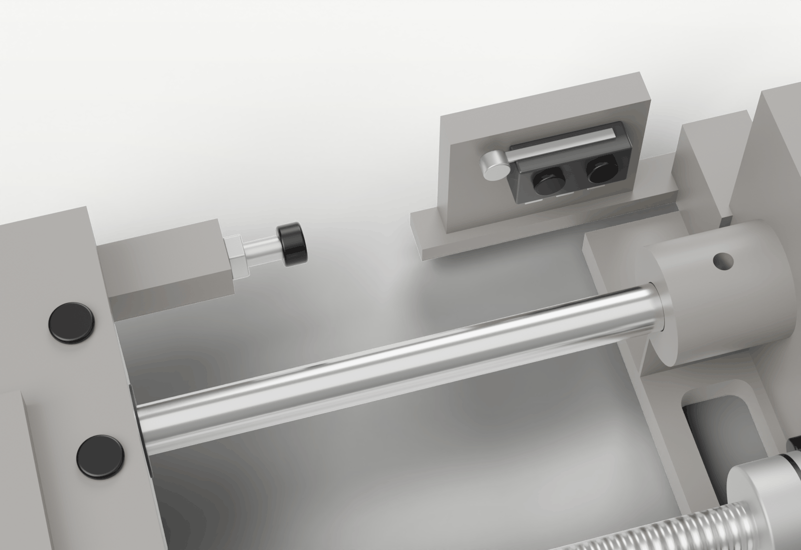
The roller switch on the
motor-end tab and the trigger with its adjusting screw. In the renders the switch's position is
approximate; follow the steps.
Note that a roller lever opens again well past the point where it closed: 3.8 mm on the prototype. The
firmware allows for that (section 9), so this is normal.
Screw the roller microswitch to the tab on the motor-end block, its roller facing the
carriage, so the trigger approaches the roller gradually.
Bolt the trigger to the carriage with two M3 × 16, washers and nuts.
Turn the M4 adjusting screw into the trigger's horizontal pilot, with its lock nut.
Move the carriage slowly towards the motor end by hand and listen for the switch's click.
Set the adjusting screw so the switch clicks before any part of the carriage, the bearing
blocks or the nut carrier reaches the motor-end block, and the lever still has travel left after the
click.
Lock the screw with its nut once the switch triggers reliably.
Mounting on the base
Fix the motor-end block to the base with M5 bolts or screws and large washers.
Leave the far end loose and run the carriage end to end a few times so the rods settle.
Tighten the far end last, alternating between the screws, and check that the motion has not
become tighter.
The finished rail from the
motor end.
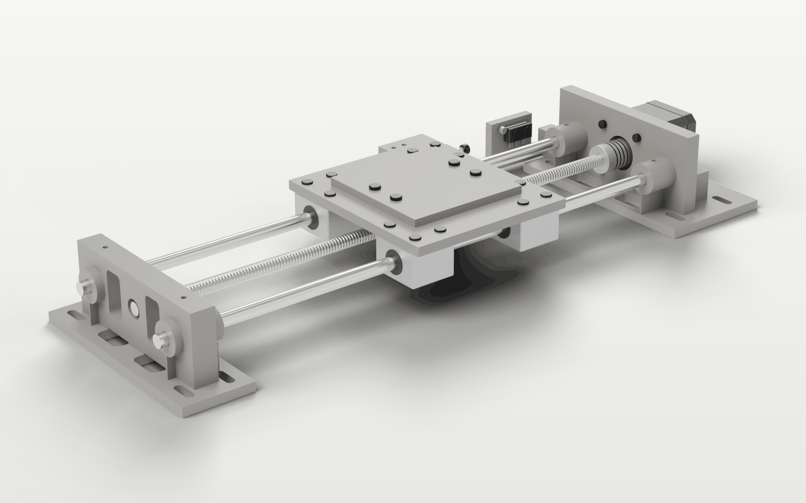
The finished rail from the
far end.
Mechanical checks
The rods are clean, straight and held firmly.
All four bearing blocks sit flat and are tight; none feels rough or binds.
The lead screw turns without steering the carriage sideways, and the coupler set screws are
tight and reachable.
The nut carrier is tight without side-loading the screw.
The switch clicks before any hard contact, with overtravel left.
At least 15 mm of clearance remains at the far soft limit (140 mm from the switch).
The platform is rigid and doesn't rock; the end blocks are firmly mounted on a heavy, flat base.
Electronics
The controller is built on a half-size breadboard: an Arduino Nano, a TMC2209 driver module, two
resistors and a capacitor. This section introduces the parts; section 6 puts them on the board.
Connections. Pins are constants in firmware/src/config.h.
Nano
Goes to
Notes
D2
home switch NO (switch C to GND)
closes (LOW) when pressed; hardware interrupt INT0
D3
TMC2209 STEP
one pulse is one 1/16 microstep, 2.5 µm
D4
TMC2209 DIR
D5
TMC2209 EN, plus 10 kΩ to 5 V
low enables the motor; the pull-up keeps it off while the Nano starts
D7
TMC2209 PDN_UART, direct
UART receive
D8
TMC2209 PDN_UART, through 1 kΩ
UART transmit; a single-wire UART needs the resistor
5V, GND
TMC2209 VIO, GND
logic supply; ground common with the 12 V supply
–
TMC2209 MS1, MS2 to GND
UART address 0
–
12 V to VM, 12 V − to GND
motor supply, with 100 µF across VM and GND at the module
D9
nothing
reserved for a shutter-cable relay
TMC2209 driver
{{tmc_figure}}The usual TMC2209 module pinout (BTT V1.2/V1.3 and
most clones).
Turn the module over and compare the labels next to its pins with the drawing. Names vary:
OA1/OA2 or 1A/1B for A1/A2, VDD or VCC for VIO.
Find the UART pin: labelled PDN, PDN_UART or UART. On some BTT modules a solder jumper must be
bridged to bring it out to the header.
Check the sense resistors (marked R100 or R110: 0.11 Ω). If yours differ, change
DRIVER_RSENSE_OHM in firmware/src/config.h: the current scales with it.
The potentiometer (VREF) is not used: the current is set over UART from the app.
If the module came with a heatsink, stick it on the pad on top, clear of all pins.
Arduino Nano
{{nano_rail}}The Nano as it sits on the breadboard, USB to the left. The
ringed pins are used.
{{nano_rail_legend}}
The rail uses six signal pins (D2–D5, D7, D8), 5V and both GND pins. D2 is the hardware-interrupt
pin, so the switch stops the motor before its next step. A CH340 clone is fine; the Pi's USB
powers it. The same colours are used for each signal in every drawing and table.
Resistors, capacitor and switch
{{r1k}}R2, 1 kΩ: brown, black, red (5-band: brown, black, black, brown).
D8 transmits through it.{{r10k}}R1, 10 kΩ: brown, black, orange (5-band: brown, black, black, red).
Pull-up on EN.
Resistors have no direction. If unsure of the colours, measure them: about 1.0 kΩ and 10 kΩ.
{{cap_figure}}C1, 100 µF.
C1 sits across VM and GND next to the driver and absorbs voltage spikes from the
motor. The stripe marks minus (−); the longer leg is plus (+). It must go in the right way round:
− to GND, + to VM. Use a 25 V or higher rating.
The home switch has three terminals: C (common), NO (normally open) and NC
(normally closed). Wire C and NO, so the switch closes when pressed and pulls D2 to ground; NC
stays empty.
{{rail_switch}}The home switch, wired normally open.
The switch is armed during every move, not only while homing. Its first contact stops any
motion before the next step. While it is pressed, moves towards it are refused.
To wire it normally closed (C and NC) instead, set ENDSTOP_ACTIVE_LEVEL
to HIGH in firmware/src/config.h and reflash. A broken wire then also
reads as pressed, which fails safe, at the cost of a stop whenever a connector works loose.
Motor coils
The NEMA 17 has four wires: two coils. With a multimeter on Ω, the two wires of one coil read a
few ohms; wires of different coils read open. One pair goes to A1/A2, the other to B1/B2. Wire
colours vary between motors, so measure, and mark the pairs before wiring.
{{coil_figure}}Finding the coil pairs: touch two wires at a time
until both pairs are found.
Wiring on the breadboard
The breadboard
{{breadboard}}Which holes are joined inside a breadboard.
Columns are numbered 1–30 and rows lettered a–j. A hole is named by row and column, as in
c13.
Two parts are connected when their legs are in the same five-hole strip. Modules straddle the
middle gap so that each pin has its own strip.
Follow your board's red (+) and blue (−) markings for the rails; their order varies between
makers. Long boards sometimes split the rails in the middle; this build stays within columns 1–30.
Reading the wiring drawing
Each wire carries a label such as W12 D7 → PDN: its number in the wire table,
where it starts and where it ends.
Most signal wires arch over the board so they don't cross. W9 and W10 lie flat in rows c and b,
and the switch lead W14 runs flat between rows a and b.
Wire colours don't matter electrically, but matching the drawing makes checking easier: black
for ground, red for 5 V, one colour per signal.
The 12 V leads go straight to the driver's VM and GND pins and never touch the rails, which
carry the Nano's 5 V.
Before you start
USB unplugged, 12 V supply off and disconnected, motor not connected.
Complete wiring
{{rail_wiring}}The complete controller. The TMC2209 is the module of section 5.1,
turned a quarter turn clockwise: logic pins along the top, power pins along the bottom. The motor
and the 12 V leads go on last, with the supply off (section 9).
Wire table
Work down the table one line at a time and tick each line off against the drawing. The top rails
are above row a, the bottom rails below row j.
{{rail_wires}}
Checks before power
Coil pairs: a few ohms within each pair, open between the pairs; one pair on
A1/A2, the other on B1/B2.
UART: W12 and R2 land on the UART pin (PDN, PDN_UART or UART), with the solder
jumper bridged if your module needs it.
Switch: C to the GND rail, NO to D2, NC empty.
Common ground: with the meter on continuity, j25 (driver motor ground) and the
bottom GND rail beep: the module joins its two GND pins.
No short: the 5 V rails and the GND rails don't beep.
C1: stripe (−) in h25, + in h26.
Firmware
The Nano's firmware is in firmware/ and is built with PlatformIO. It can be flashed
from any computer with PlatformIO installed, or on the Pi once the app is installed (section 8).
From a computer
pio run -d firmware -e nano -t upload
Use -e nano_new instead for a genuine Nano or one with the new bootloader; most
CH340 clones use the old one (nano).
The first build downloads the compiler and libraries, which takes several minutes on a Pi.
Settings in the firmware
Everything that depends on the wiring is a constant in firmware/src/config.h:
Constant
Default
Change when
INVERT_DIRECTION
true
the carriage moves towards the switch on Away
ENDSTOP_ACTIVE_LEVEL
LOW
the switch is wired normally closed (then HIGH)
DRIVER_RSENSE_OHM
0.11
the driver module has other sense resistors
Raspberry Pi and the app
Preparing the Pi
With Raspberry Pi Imager, write Raspberry Pi OS Lite (64-bit) to the SD card. In its
settings, set a host name (for example macrorail), a user and password, the Wi-Fi
network, and turn on SSH.
Start the Pi from its 2.5 A supply and log in over SSH: ssh <user>@macrorail.local.
The script installs uv and the Python dependencies, creates
~/.config/macrorail/config.toml from deploy/config.example.toml, and
installs and starts the macrorail service, which then also starts on every boot. It asks
for your password for the sudo steps, and warns if your user is not in the
dialout and plugdev groups (needed for the serial port and the camera).
Running it again later updates an existing installation and keeps the config.
Open http://macrorail.local:8000 (your host name) on a phone or laptop on the
same network.
~/.config/macrorail/config.toml holds the hardware constants; day-to-day settings
(speeds, currents, step size) are changed in the app. The defaults suit the rail as built:
[rail]
port = "auto" # finds the Nano by what it reports
steps_per_mm = 400 # 200 steps x 16 microsteps / 8 mm lead
min_mm = 0.5 # soft limits, mm from the switch
travel_mm = 140.0
homing_speed_mm_s = 2.0
Leave port on "auto". It also works when the scan module's Nano is
plugged in, which a /dev/serial/by-id/... path does not (both Nanos share that name).
Restart the app after any change.
Never pull the plug on a running app
Stop or restart it with systemctl. An unclean exit can leave the A6400 unresponsive
until it is switched off and on again.
First power-up and homing
Do these checks in order, the first time and after any change to the wiring. Keep a hand near
the 12 V switch.
Driver, without the motor. Motor unplugged, 12 V on, the Nano on the Pi. The
rail's status in the app's top bar shows Not homed. No driver power means the
TMC2209 doesn't answer: check 12 V, the UART wiring (W12, W13, R2) and MS1/MS2 (W7, W8). The
driver only answers on UART while VM has power.
Switch. Press the switch by hand. The Position card on the Shoot tab shows
Home switch pressed at once.
Motor. 12 V off, plug in the motor (M1, M2), 12 V on.
Direction. On the Shoot tab, choose 1 mm and press Away. The carriage
must move away from the switch. If it moves towards it, swap the two wires of one coil (12 V off),
or change INVERT_DIRECTION and reflash.
Home. Press Home. The rail moves towards the switch at 2 mm/s and stops
on its first contact, backs off until the switch has opened again plus 1 mm, and touches it again
at the same speed: that contact is position 0. It then parks 0.5 mm from the switch, or just clear
of the release point if that is further. The activity log reports the release distance.
Travel. Jog to the far end of the travel and check that the carriage stops at
the soft limit with at least 15 mm to spare. If your rail is shorter, lower travel_mm.
Motor current and backlash
The motor current is set on the System tab under Motion → Motor current: 600 mA running and
200 mA holding by default. The full current is applied from the first move until the rail has been
idle for 30 s, and is never changed during a stack. Raise it only if the motor misses steps, and
check that the motor stays comfortably warm.
Once per setup, with the camera running (section 10) and a small, sharp detail in focus, press
System → Measure backlash. The rail passes through focus in both directions,
measures the play in the screw and offers a take-up distance (the default is 0.3 mm until measured;
the prototype measured 14 µm and uses 0.1 mm). Every arrival at a stack's start then ends with a
move in the stack direction.
Camera
The app controls the camera over USB with gphoto2. It was developed with a Sony A6400; other
bodies that gphoto2 can trigger remotely should work, with their own menu names.
Sony A6400 settings
Menu item
Setting
Why
USB Connection
PC Remote
remote capture over USB
PC Remote Settings → Still Img. Save Dest.
PC+Camera
the full-size files stay on the card; a copy comes over USB
PC Remote Settings → PC Save Img
JPEG Only
a small JPEG for the app's previews, also when shooting RAW
USB Power Supply
Off
charging over USB overloads the Pi's supply and drops USB devices
Auto Power OFF
off, or the longest time
long stacks
Focus mode, exposure
manual focus, manual exposure
the rail does the focusing; every frame exposed alike
Shutter type
electronic (silent) where possible
avoids shutter shock at high magnification
Connect the camera to the Pi; its status in the top bar turns green. Live view appears on the
Shoot tab. Use a dummy battery for long stacks: the battery drains while the camera is connected.
The Camera tab: ISO, shutter, aperture, exposure
compensation, white balance, quality, size and focus mode can be set from the browser.
The camera's settings can be changed on the Camera tab. The previews option downloads a
small copy of each shot for review on the Pi; it needs the two PC Remote settings above.
A capture is confirmed by the camera in about 1.4 s on the A6400. If a shot fails, the app
reconnects and retries once; a second failure pauses the stack, and Resume retakes that slice.
A duplicate frame is possible, a missing one is not.
Shooting a stack
The Shoot tab: position, jog,
focus range and stack settings.
Home the rail.
Set the range. Jog to the front of the subject on the live view and press
Set here for Start, then the same for End. Or bring any part of it roughly into focus and
press Find range automatically: a focus scan finds where the subject starts and ends.
Tap the live view to zoom in 3×.
Choose a step.Which step? suggests half the depth of field from the
magnification and numerical aperture (for a 4× / 0.10 objective, 32.5 µm). The Start button shows
the number of shots.
Preview range moves between the two ends so you can check the framing.
Start stack, optionally with a name. Pause holds the position; Stop returns to
the start.
Review shows each stack's shots, a quick all-in-focus preview and a rough depth
map. Download gives a zip of the record, the preview, the depth maps and the small copies.
One device controls the rail at a time; another can take over with Take control. Stop
works from any device. Full-size files stay on the camera's card: stack them with your stacking
software (Zerene Stacker, Helicon Focus or similar).
Troubleshooting
Symptom
Likely cause and fix
Mechanics
Carriage binds with the screw removed
Rods not parallel or spacing wrong: loosen the far block and the bearing screws, realign (section 4.2).
Binds only with the screw fitted
Nut carrier tightened off the screw's line: loosen it, run the carriage end to end, tighten again.
Tight spot once per turn of the screw
Bent screw or coupler not centred: check the screw's insertion and the coupler; replace a bent screw.
Uneven slices in a stack
Backlash not taken up: run Measure backlash and apply its take-up; check the nut carrier and coupler set screws.
Controller
Status shows No driver power
12 V missing at VM, or the UART is miswired: check W12, W13, R2 and MS1/MS2. The TMC2209 answers only while VM is powered.
The rail is not found
port = "auto" in the config, the firmware flashed, a USB data cable (not charge-only). ls /dev/serial/by-path/ must list it.
Moves towards the switch on Away
Swap the two wires of one coil (12 V off), or change INVERT_DIRECTION and reflash.
Motor hums or vibrates without turning
Coil pairs mixed up: measure them again (section 5.4).
Homing fails with NO_SWITCH
The switch never closed: check C to GND and NO to D2, press it by hand (the Position card must show it), and check that the trigger reaches the roller.
Homing fails with SWITCH_STUCK
The switch stayed closed after backing off 5 mm: wired C and NC, or the trigger screw set too far out.
A move stops with ENDSTOP
The switch closed during a move: the trigger reaches the roller too early, or a loose switch wire picks up noise.
LINK errors, motion stops
No message from the Pi for 2 s: loose USB cable, or the Pi under-powered. Use a 2.5 A supply.
Camera and Pi
Camera not found
USB Connection not on PC Remote, or a desktop image's gphoto2 monitor holds the camera. Unplug and replug the camera.
Camera drops out during a stack
The Pi is under-voltage (the System tab and the log warn): set the camera's USB Power Supply to Off and use a 2.5 A supply.
Camera stops responding after a crash
Switch the camera off and on. Always stop the app with systemctl.
No previews in Review
Set Still Img. Save Dest. to PC+Camera and PC Save Img to JPEG Only.
Can't install the app on a phone, no system notifications
Browsers only allow these over HTTPS or on the Pi itself. Over plain HTTP the stack alerts still chime, vibrate and mark the tab title.
Further reference: docs/wiring.md (pin map),
docs/protocol.md (the serial protocol and its error codes) and
docs/design-notes.md (why things are done the way they are).